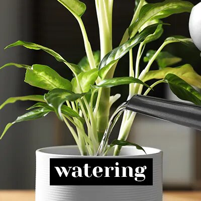
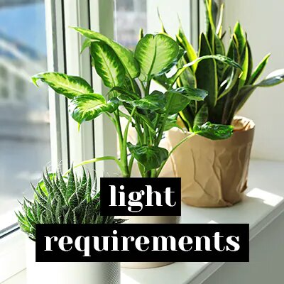
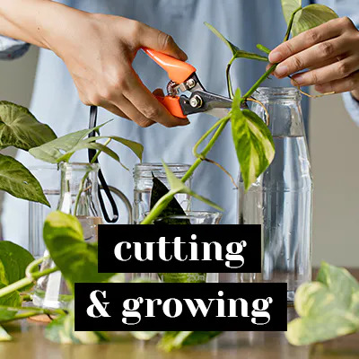

All answers regarding the perfect plant care
 Buying plants is always a good idea, but every Plants parent knows that it can be a tough job to take care of your beauties. All we want is to let them grow up in a loving environment, where they can shine for as long as possible. Our Plants Doctor answers all your questions regarding plant care, from the base (like watering your plant) to advanced tips and tricks (like fighting plant diseases). On these pages you can find everything you need to know in order to give your plant the best care for a long, happy and healthy life!
Basic rules for caring for indoor plants
Each flower requires an individual approach: observe the soil and the well-being of the plant for several days. The main rule is to avoid extremes. Excessive watering or drying, excess sunlight or darkness - all this is detrimental: flowers do not like extreme conditions, it is always better to stick to the golden mean. Do not forget to remove dried leaves and petals, spray and fertilize the plant.
Temperature regime in the care of flowers
Plants are not in vain called "room" - they are really comfortable at this temperature. Most flowers do best at 13-24 degrees, with only exotic varieties requiring higher rates. Some, on the contrary, grow better in the cold. For them, the maximum heat mark is 16 degrees: at higher modes, the leaves begin to deteriorate.
How and what to feed the plants?
If plants suffer from a lack of nutrition, they need additional feeding. In this case, first of all, you need to transplant the plant into a new soil, and after 2 months start feeding it. Fertilizers will also be needed if you planted the plant in unsuitable soil. It is difficult to understand which component is missing for normal growth, so it is best to transplant the plant. It is recommended to fertilize only healthy plants during their flowering and growth. It is not worth applying dry fertilizers - this can damage the roots. It is better to dilute the substances with water and water the earth.